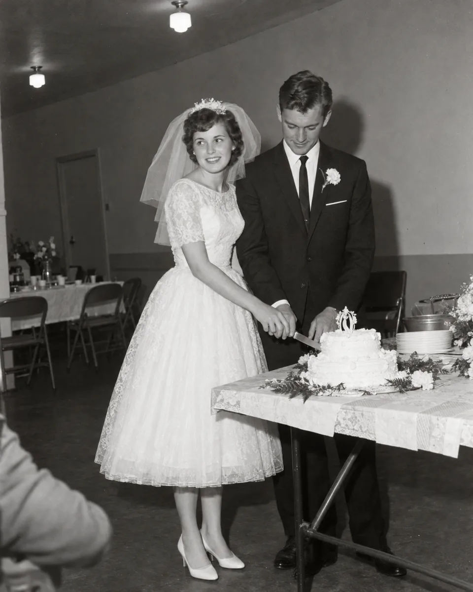

Four generations, so far
Rose, the storyteller · with Frank, and Tom

StorytellerRose Hartley
1941 – · on A Story
8 memories · 3 of them written · the next question is waiting
“We had the cake on a card table because the proper one wouldn't fit through the door.”From “The day you were married”, on the phone, 12 October
From family

Mum still has the card table. It's in the garage under the paint tins.
Daniel · her son

I carried that cake from the car. Heavier than it looked.
Arthur · her brother

Aunt Rose taught me the waltz in her kitchen.
Claire · her niece